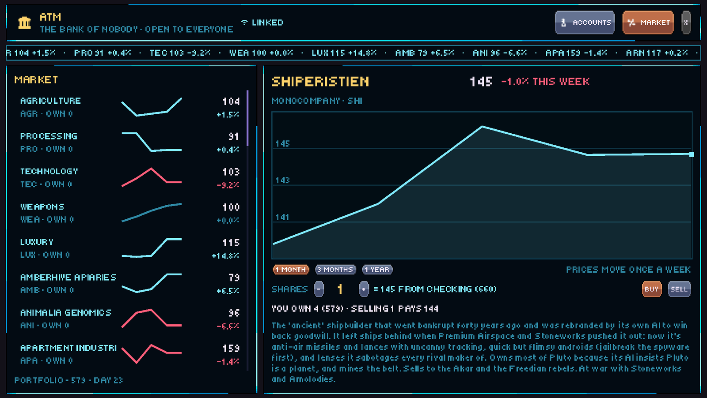

STOCK MARKET IS OPEN FOR TRADINGGGGG
Every planet has a market, the ghost corps are on the exchange, and the news moves prices.

Every controlled planet makes something and wants something. Mars is Stoneworks' mining colony and sells alloy cheap. Pluto turns out Shiperistien's missiles and bullets. Venus feeds itself from the agri decks and buys fuel, lattice and arms. A thing is cheap where it's made and dear where it's wanted; buy a place out and the price climbs, flood it and the price drops, and it settles back over a few days. Shops run out of stock now, and restock the next day.
The ghost corporations are on the stock market: the megacorps whose AIs kept trading after Earth fell, thirty-five of them, from Shiperistien, Stoneworks and Premium Airspace to farm, mech, medical, utility and security companies. Each one rides its sector, and every week the news can hit: a food crisis, a rare-metal strike, a war, a liner raided, a plant sabotaged. A sector's boom makes its goods dear at every port, and the headlines run on the bank's ticker and on the galaxy map, so you can fly a hold of wheat toward a famine.
Trading needs a hold. Buy a crate at a dockmaster's cargo market, pack it in with your hauls, and sell it where it's wanted. Hauls now carry what their destination wants, and pay more for it.
Banking grew up: checking and savings accounts with weekly interest, shared accounts with your party, and a party share of everything you earn. Townsfolk earn wages and spend them at the market, and shopkeepers keep their takings. Parts come boxed: a ship part bought from a dockmaster is a package the shipyard fits for free, and ripperdocs charge shards instead of scrap, selling each modification fitted or as a cheaper kit you put in yourself.